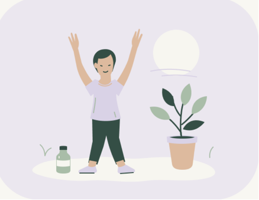

Sono e descanso
Tente manter horários regulares e desacelerar antes de dormir. Descansar também é necessário.
Início/Hábitos saudáveis
02 / HÁBITOS SAUDÁVEIS
Corpo e mente fazem parte do mesmo cuidado. Descansar, se movimentar e reservar tempo para si são formas de construir uma rotina mais acolhedora.
Não é sobre perfeição. É sobre constância.

CUIDADOS QUE CABEM NA VIDA REAL
Tente manter horários regulares e desacelerar antes de dormir. Descansar também é necessário.
Dance, caminhe, pedale ou brinque. Encontre uma forma de se movimentar de que você goste.
Faça refeições variadas quando possível e lembre-se de beber água ao longo do dia.
Intercale o tempo on-line com momentos fora das telas. Perceba como o uso afeta você.
Ouça música, desenhe, leia ou cuide de uma planta. Reserve espaço para algo prazeroso.
Compartilhe o que sente com alguém de confiança. Buscar apoio também é um hábito de cuidado.
UMA ROTINA POSSÍVEL, NÃO PERFEITA
DE MANHÃ
Beba água, se alimente e pense em uma intenção simples para o dia.
À TARDE
Entre as tarefas, alongue o corpo ou dê uma volta, se puder.
À NOITE
Diminua o ritmo, afaste as telas e crie um momento tranquilo antes de deitar.
Adapte as ideias à sua realidade e às suas necessidades. Um dia difícil não apaga o seu caminho.
DESAFIO DA SEMANA
Que tal trocar alguns minutos de tela por uma caminhada ou uma conversa? Escolha algo possível para você.
Qual hábito faria bem para você agora?
Reserve um pequeno momento nos próximos dias.
Como você se sentiu? Ajuste sem se cobrar.
CONTINUE EXPLORANDO